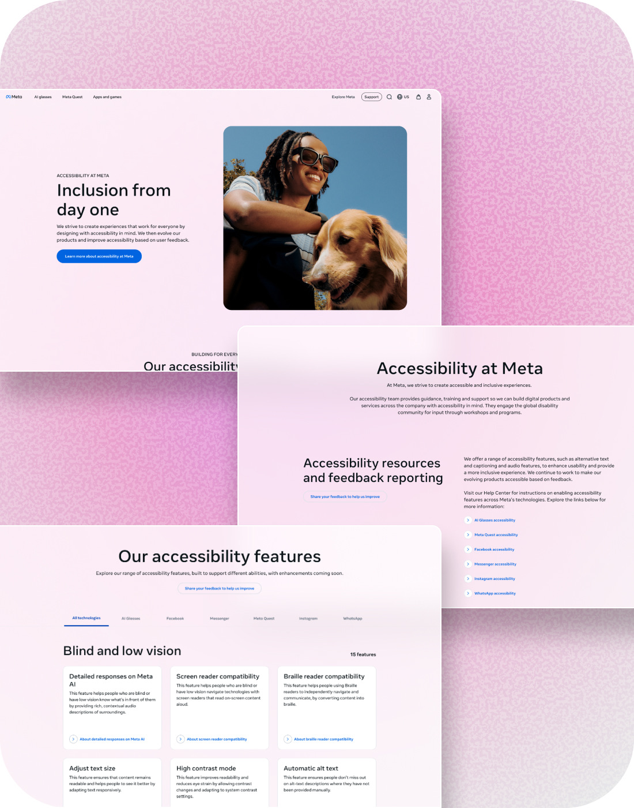
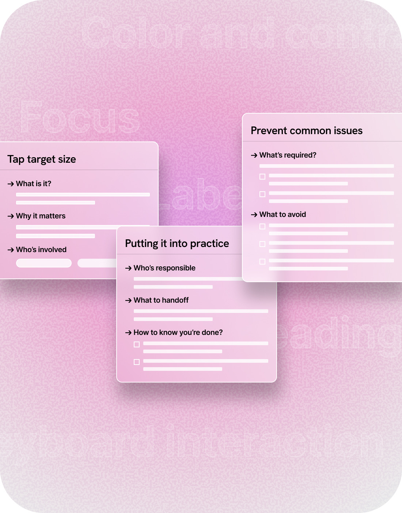
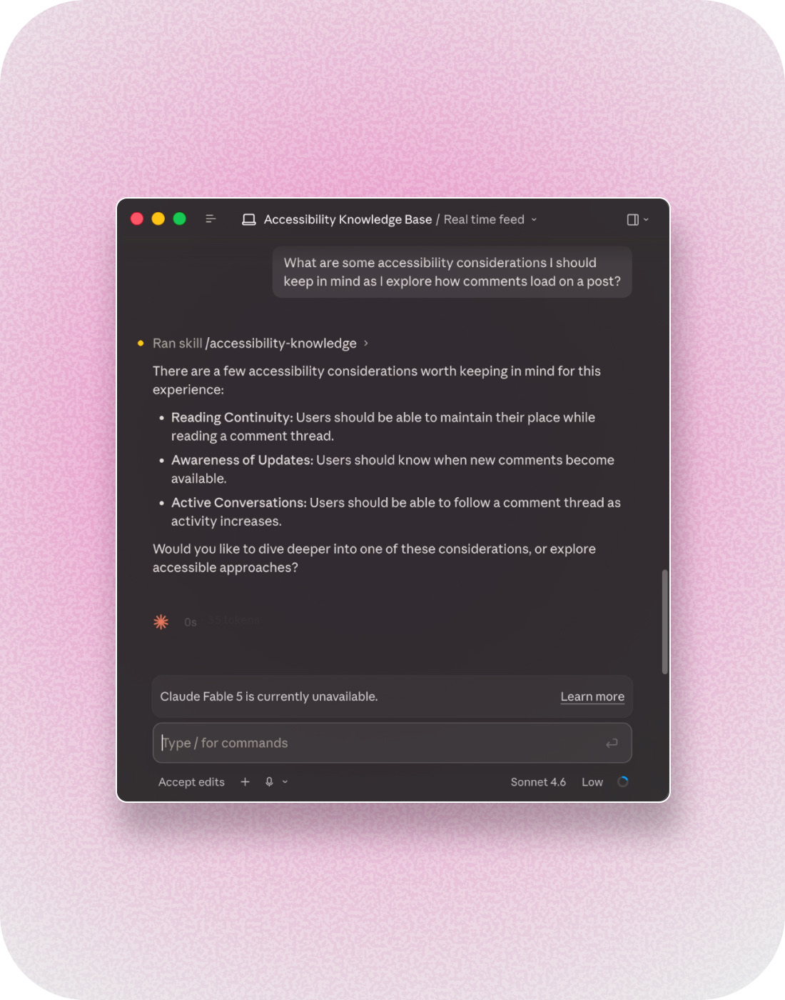

Scaling Accessibility Across Meta
Making accessibility knowledge usable by product teams and retrievable by AI.
Accessibility had relied on specialists catching issues late in development. The European Accessibility Act (opens in new tab) made it business-critical, and as AI accelerated how teams built, late-stage review could no longer keep pace.



The full case study is confidential. One part of the work launched publicly — it's live at meta.com/accessibility (opens in new tab).
Impact
- Enabled product teams to apply Meta's accessibility standards with less reliance on specialists through a repeatable guidance model organized around product decisions rather than WCAG structure.
- Scaled accessibility capability across the company: seven live training sessions reached more than 6,000 employees and were later converted into evergreen eLearning completed by more than 600 product designers.
- Established Meta's first centralized public accessibility destination, bringing together more than 30 accessibility features and 45 Help Center articles into a single experience on meta.com.
- Restructured accessibility knowledge around user intent so AI tools could retrieve it, consolidating fragmented content into a governed hierarchy that surfaced the right source more reliably.